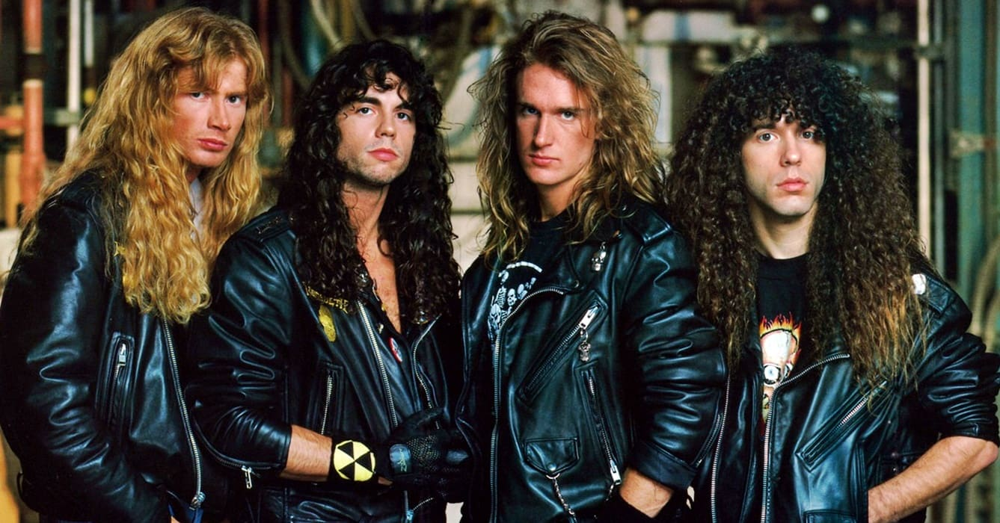

Megadeth é uma banda norte-americana de Thrash metal liderada por seu fundador, o vocalista e guitarrista Dave Mustaine. O grupo foi formado em 11 de abril de 1983, após Dave ser demitido do Metallica em um ônibus voltando para L.A. Desde então, a banda lançou quinze álbuns de estúdio, quatro álbuns ao vivo, dois EP e cinco compilações.
A banda ganhou fama internacional ligeiramente. Ficou muito conhecida por sempre trocar sua formação devido aos constantes problemas de personalidade de Mustaine e pelo fato de que o vocalista não queria viciados na banda em suas turnês (mesmo sendo sabido que ele mesmo tinha sérios problemas com drogas). Após o lançamento de seu álbum estreia em 1985, a banda lançou álbuns premiados com o disco de ouro e platina. O álbum Rust in Peace (1990) é considerado um dos maiores álbuns de Trash metal de todos os tempos, junto com Master Of Puppets, Reign In Blood, e até mesmo Peace Sells... but Who's Buying?